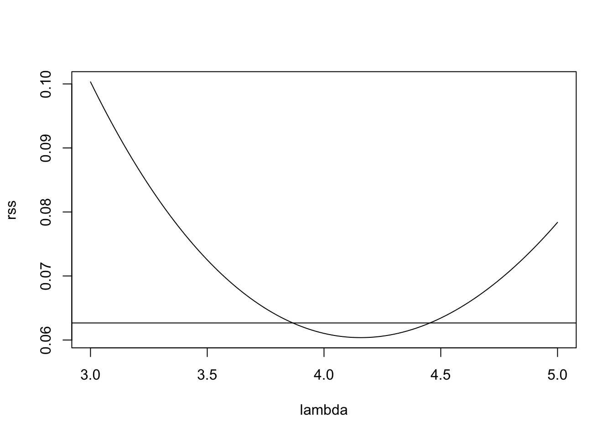

Problem Sheet 4
You should attempt all these questions and write up your solutions in advance of the workshop in week 8 where the answers will be discussed.
13. Consider the dataset pressure, built into R, which
describes the vapour pressure \(P\) of mercury as a function of
temperature \(T\).
- For given \(T_0\), explain how a model of the form \(P = \beta_0 + T \beta_1 + \max(0, T-T_0) \beta_2 + \varepsilon\) can be fitted to the data.
- Why might a model of this form make sense for the given data?
Such a model may make sense, because the slope of the samples increases faster than linear as the temperature \(T\) increases. The term \(\max(0, T-T_0)\) is zero for small \(T\), but adds an additional slope once \(T\) exceeds the cutoff temperature \(T_0\).
- What is a good value of \(T_0\) for this dataset?
\(T_0\) should be placed at the end of the “flat” part of the plot, where the pressure starts increasing more quickly. A quick experiment shows that the best \(R^2\) value is achieved for \(T_0 \approx 273\):
Call:
lm(formula = pressure ~ temperature + I(pmax(0, temperature -
T0)), data = pressure)
Residuals:
Min 1Q Median 3Q Max
-53.125 -17.553 -6.308 13.017 55.839
Coefficients:
Estimate Std. Error t value Pr(>|t|)
(Intercept) -17.62933 14.63735 -1.204 0.2459
temperature 0.25472 0.08774 2.903 0.0104 *
I(pmax(0, temperature - T0)) 7.77118 0.38024 20.437 6.85e-13 ***
---
Signif. codes: 0 '***' 0.001 '**' 0.01 '*' 0.05 '.' 0.1 ' ' 1
Residual standard error: 29.86 on 16 degrees of freedom
Multiple R-squared: 0.9843, Adjusted R-squared: 0.9823
F-statistic: 501.3 on 2 and 16 DF, p-value: 3.705e-15To get a better understanding of how the extra term \(\max(0, T-T_0)\) improves model fit, we plot the data together with the fitted model:
plot(pressure)
T.plot <- seq(0, 360, l=100)
p.plot <- predict(m, data.frame(temperature=T.plot))
lines(T.plot, p.plot)
As expected, for \(T > 273 = T_0\), the slope of the fitted line increases, leading to greatly improved model fit. (An alternative, and probably superior approach would be to transform the data and try to fit a straight line to the transformed data instead.)
14. Where possible, rewrite the following regression models in linear form.
- \(y = \beta_0 \beta_1^x\)
We can take logarithms: \[\begin{equation*} \log(y) = \log(\beta_0) + x \log(\beta_1) =: \beta_0' + x \beta_1'. \end{equation*}\] Notice that writing \(\log(y) = \beta_0' + x \beta_1' + \varepsilon\) implies \(y = \beta_0 \beta_1^x \exp(\varepsilon)\).
- \(y = \beta_0 + \beta_1 \sin(x_1) + \beta_2 \exp(x_2)\)
We can simply set \(x_1' = \sin(x_1)\) and \(x_2' = \exp(x_2)\). This transformation does not affect the error term.
- \(y = \frac{x}{\beta_0 + \beta_1 x}\)
We can write \[\begin{equation*} \frac1y = \frac{\beta_0 + \beta_1 x}{x} = \beta_0 \frac1x + \beta_1. \end{equation*}\] Thus we can use \(x' = 1/x\), \(y' = 1/y\), \(\beta_0' = \beta_1\) and \(\beta_1' = \beta_0\). This transformation affects the noise, too, so some care is needed.
15. Consider the dataset from
The dataset contains samples \((x_{i,1}, x_{i,2}, y_i)\). We want to find a model for \(y\) as a function of \(x_1\) and \(x_2\).
- Fit a linear model to the data and produce a residual plot. Based on the plot, discuss how well the model fits the data.
We can fit the model as follows:
# data from https://teaching.seehuhn.de/2022/MATH3714/P04Q14.csv
d <- read.csv("data/P04Q14.csv")
m <- lm(y ~ x1 + x2, data = d)
plot(fitted(m), resid(m))
The mean of the residuals does not form a straight line, so the dependency of \(y\) on the \(x_i\) seems to be nonlinear. Also, the variance of the residuals decreases as \(\hat y\) increases. Model fit is not good and a transformation of the data may be useful.
- Apply a Power Transform to the model, as described in section 11.3 of the notes. Explain your choice of \(\lambda\).
To choose the exponent \(\lambda\), we plot the residual sum of squares as a function of \(\lambda\).
gm <- exp(mean(log(d$y)))
lambda <- seq(3, 5, length.out = 101)
rss <- numeric(length(lambda))
for (i in seq_along(lambda)) {
li <- lambda[i]
y.prime <- (d$y^li - 1) / (li * gm^(li-1))
mi <- lm(y.prime ~ x1 + x2, data = d)
rss[i] <- sum(resid(mi)^2)
}
plot(lambda, rss, type="l")
n <- nrow(d)
p <- 2
cutoff <- min(rss) * (1 + qt(0.971, n-p-1)^2 / (n-p-1))
abline(h = cutoff)
The horizonal line in this plot indicates the cutoff suggested by the
rule of thumb in (11.1). Of the values of \(\lambda\)
where rss is below the cutoff, \(\lambda = 4\) seems the most “simple”,
so we try this value here.

Now the residual plot looks perfect!
16. The Prediction Error Sum of Squares (PRESS) is defined as
\[\begin{equation*}
\mathrm{PRESS}
= \sum_{i=1}^n \bigl( y_i - \hat y^{(i)}_i \bigr)^2.
\end{equation*}\]
Using lemma 10.2, or otherwise, determine the PRESS
value for the stackloss dataset built into R (using stack.loss
as the response variable).
We can use the formula \[\begin{equation*} \mathrm{PRESS} = \sum_{i=1}^n \Bigl( \frac{\hat\varepsilon_i}{1 - h_{ii}} \Bigr)^2 \end{equation*}\] from the lemma. Implementation in R is straightforward.
m <- lm(stack.loss ~ ., data = stackloss)
X <- model.matrix(m)
H <- X %*% solve(t(X) %*% X, t(X))
hii <- diag(H)
sum((resid(m)/(1 - hii))^2)[1] 291.8689